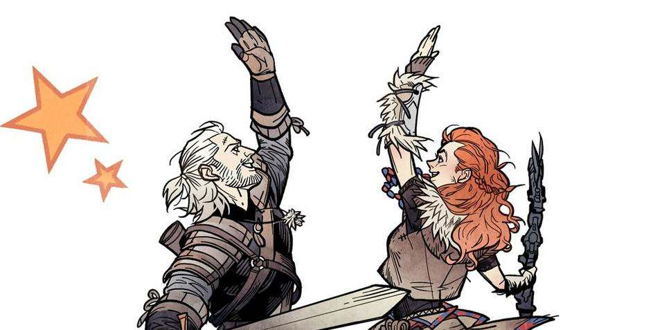
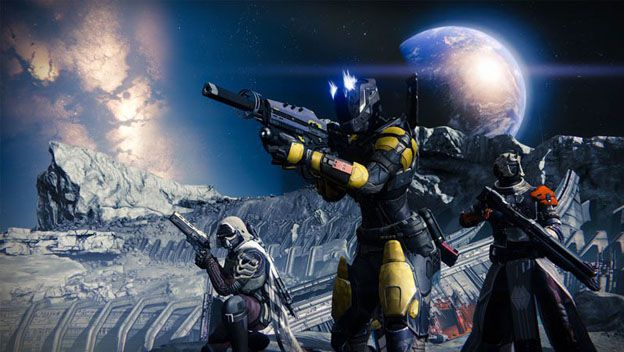
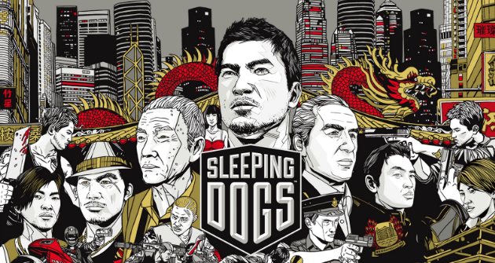
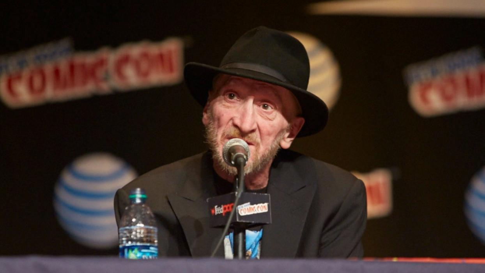

 Horizon Zero Dawn - CD Projekt RED felicita a Guerrilla Games Si esta mañana os contamos que Sony y Microsoft habían felicitado a Nintendo por los lanzamientos de The Legend of Zelda Breath of the Wild y Nintendo Switch, ahora os queremos informar de una nueva felicitación entre dos conocidas compañías del sector. En esta ocasión, ha sido CD Projekt, responsables de The Witcher 3 Wild Hunt, la que ha felicitado a Guerrilla Games por Horizon Zero Dawn para PS4. Además de la felicitación a través de un tuit, CD Projekt también ha publicado una imagen protagonizada por Geralt de Rivia y Aloy.
Los mejores juegos de Nintendo Switch y Wii U de 2017 Durante las últimas semanas os hemos presentado varios reportajes en los que hemos repasado lo mejor de 2016 en lo que a videojuegos se refiere, con contenidos dedicados a los mejores juegos según la plataforma o a los mejores juegos según su género. Los mejores juegos de 3DS, los mejores juegos de PS4, los mejores juegos de Xbox One, los mejores juegos de rol y los mejores juegos de fútbol son sólo algunos de ellos; pero en esta ocasión, queremos ir un paso más allá y adelantarnos a lo que llegará a lo largo del año con este reportaje centrado en los mejores juegos de Wii U y Nintendo Switch de 2017.
 Destiny 2 - Nuevos detalles sobre el juego de Bungie ¡Llegan nuevos datos sobre Destiny 2! Bungie ha hablado recientemente sobre lo que veremos en la secuela de Destiny y sobre las posibilidades para transferir datos.
 Sleeping Dogs - Donnie Yen protagonizará la adaptación cinematográfica Donnie Yen, o lo que es lo mismo, el maestro Chirrut Îmwe en Rogue One, será el protagonista de Sleeping Dogs, el videojuego desarrollado por United Front Games.
 Frank Miller estará en Heroes Comic Con Madrid 2017 El 11 y 12 de noviembre tendrá lugar en Madrid la próxima edición de Heroes Comic Con y para ir abriendo boca han lanzado la primera gran confirmación, Frank Miller.